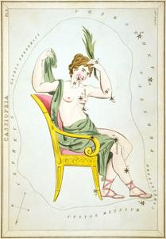
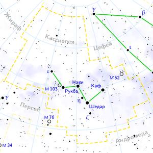

ИсторияДревнее созвездие. Включено в каталог звёздного неба Клавдия Птолемея «Альмагест». Названо именем Кассиопеи — в греческой мифологии жены эфиопского царя Кефея и матери Андромеды. Согласно одной из версий мифа, Кассиопея за своё хвастовство была надолго заперта и долгое время провела в темнице. После чего получила дар прозрения и долгожданную свободу. В некоторых арабских рукописях созвездие называется «Сидящая женщина». Арабы видели в расположении звёзд руку, указывающую пальцем на впереди расположенные звёзды. НаблюдениеНаилучшие условия для наблюдений Кассиопеи — в сентябре—ноябре. Видно на всей территории России круглый год. Если через ζ Большой Медведицы и Полярную звезду провести прямую линию, она укажет на созвездие Кассиопеи. Большая Медведица и Кассиопея являются незаходящими созвездиями для средних широт, но находятся по разные стороны (почти диаметрально противоположные) от Полярной звезды. Когда первая опускается низко над горизонтом (осенью—зимой вечером), Кассиопея поднимается практически до зенита, и наоборот. О созвездииКассиопе́я (лат. Cassiopeia) — созвездие Северного полушария неба. Ярчайшие звёзды Кассиопеи (от 2,2 до 3,4 звёздной величины) образуют фигуру, похожую на буквы «М» или «W». Созвездие занимает на небе площадь в 598,4 квадратного градуса и содержит около 90 звёзд ярче 6m (то есть видимых невооружённым глазом). Большая часть созвездия лежит в полосе Млечного Пути и содержит много рассеянных звёздных скоплений. Созвездие Кассиопеи является незаходящим почти на всей территории России и на большей её части кульминирует в области зенита. Лишь на самом юге страны Кассиопея всё время целиком находится в северной стороне неба, а небольшая часть созвездия ненадолго прячется за горизонт. |
 |
|  | |